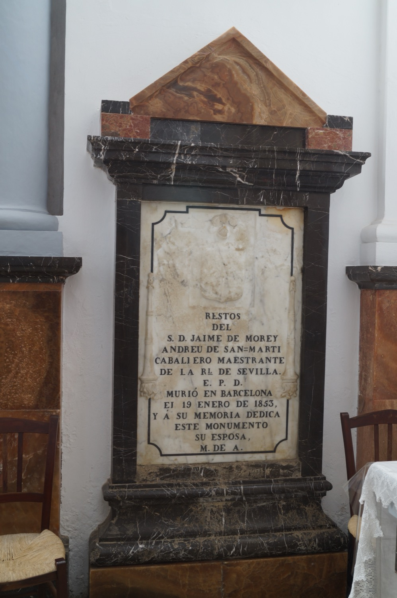

Don Jaume Morei Andreu de Santmartí fue el noble mallorquín que en el año 1805 donó dos cuarteradas de tierra y los restos de algunas edificaciones de una antigua alquería mora a los ermitaños de las comunidades de Sant Honorat de Randa y de la Trinidad de Valldemossa para que fundaran allí una ermita dedicada al nacimiento de Jesús. Murió de peste bubónica en Barcelona en 1853, y fue necesario un permiso especial del gobernador de Barcelona para que su viuda pudiera trasladar su cadáver y enterrarlo aquí.